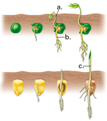
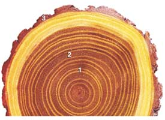

Reviewing Concepts
Multiple Choice
Choose the letter of the best answer.
1. Which choice below lists the modified leaves of a typical flower from outermost to innermost?
a. carpels, stamens, petals, sepals
b. sepals, stamens, carpels, petals
c. stamens, carpels, petals, sepals
d. sepals, petals, stamens, carpels
2. Which best states the role of the pollen tube?
a. produces pollen grains in the stamen
b. transports sperm to the embryo sac
c. protects pollen during air travel
d. all of the above
3. A stem may carry out all of the following functions except
a. storing nutrients.
b. absorbing water from the soil.
c. transporting food to the roots.
d. conducting photosynthesis.
4. Which of the following best characterizes sclerenchyma cells?
a. found in meristems
b. make up majority of root cortex
c. have thick, hardened cell walls
d. perform photosynthesis
5. Which is the correct order of the three cylinders of developing root tissue from innermost to outermost?
a. vascular, ground, dermal
b. dermal, vascular, ground
c. ground, vascular, dermal
d. ground, dermal, vascular
6. Apical meristem is to primary growth as
a. cork cell is to cork cambium.
b. tree ring is to secondary growth.
c. secondary growth is to width.
d. vascular cambium is to secondary growth.
7. The structures that are part of bark include cork, cork cambium, and
a. vascular cambium.
b. secondary xylem.
c. heartwood.
d. phloem.
Short Answer
8. Trace what happens to a pollen grain after it lands on another flower's stigma. What results from the two fertilizations?
9. List four ways that seeds can be dispersed and give an example of each.
10. Describe three environmental conditions that can trigger germination of certain plants.
11. Define vegetative reproduction. Explain its advantages in farming and cultivating decorative plants.
12. Compare and contrast a fibrous root system and a taproot system.
13. Compare and contrast the organization of vascular tissue in monocot and dicot stems.
14. How are new dermal, vascular, and ground tissues generated?
15. Describe how elongation occurs during the primary growth of roots and shoots.
16. Identify and describe the two types of tissue generated by the vascular cambium that contribute to secondary growth.
Visualizing Concepts
17. Copy and complete the table below that summarizes the functions of plant structures. Add as many additional rows as you can for other structures you learned about in this chapter.

Applying Concepts
Analyzing Information
18. Analyzing Diagrams Examine the diagrams below and answer the following questions.
a. Which process do both diagrams show?
b. Describe an adaptation shown in each diagram. Explain its effect in aiding the process shown.
c. Name the structures indicated by the labels a, b, and c.

19. Analyzing Photographs Examine the photograph showing a cross section of a tree trunk.
a. Approximately how old was this tree when it was cut down? 5, 10, 20, or 30 years old?
Match numbers on the photo with the descriptions below and explain your choice.
b. In this year, there was probably a drought.
c. In this year, spring was probably long and wet, and the short summer was hot.

Critical Thinking
20. Comparing and Contrasting Biologists generally define an "animal tissue" as a unit of many similar cells that together perform a specific function. How does this definition of a tissue contrast with what biologists call a "tissue system" in plants?
21. Relating Cause and Effect If a plant's terminal buds were clipped, would the plant's growth stop? Explain your answer.
22. Problem Solving Suppose two trees are damaged by two different bark-eating animals. The first animal eats a ring of bark all the way around the tree. The second animal eats the same amount as the first, but peels off a vertical strip of bark. Do they do the same amount of damage to the tree? Explain.
23. What's Wrong With These Statements?
Briefly explain why each statement is inaccurate or misleading.
a. Within the ovaries of a flower, meiosis produces spores that develop into pollen grains.
b. Putting a seed in a warm, moist environment causes germination.
c. Tree trunks are made of dead cells.
Performance Assessment
Biology Research Project Plant scientists are searching Peru, Mexico, and the Middle East for the wild ancestors of potatoes, corn, and wheat, respectively. Research one of these crops and include details in your report about the crop's ancestry and the biology and cultivation of the crop today.